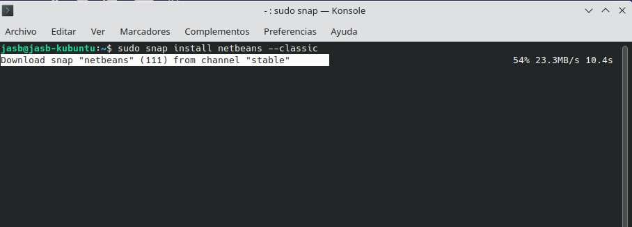
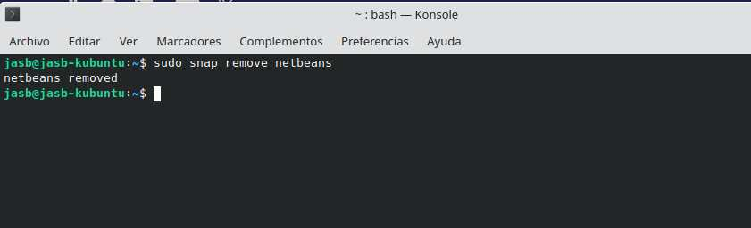

Netbeans
Introducció a NetBeans
NetBeans és un entorn de desenvolupament integrat (IDE) de codi obert, lliure i gratuït, creat principalment per al llenguatge de programació Java.
A més, existeix un nombre important de mòduls per estendre’n les funcionalitats.
NetBeans és un projecte de gran èxit, amb una àmplia base d’usuaris, una comunitat en constant creixement i amb prop de 100 socis arreu del món.
Encara que la primera versió va ser escrita en C++ orientada a Unix, com un projecte d’estudiants anomenat Xelfi (Delfi per Unix), posteriorment va ser reescrita en Java.
L’any 1999 va ser adquirit per Sun Microsystems, que va fundar el projecte el juny de l’any 2000 ja concebut com un IDE, i en continua sent el patrocinador principal.
La plataforma NetBeans permet desenvolupar aplicacions a partir d’un conjunt de components de programari anomenats mòduls.
Un mòdul és un arxiu Java que conté classes escrites per interactuar amb les API de NetBeans i un arxiu especial, el manifest file, que l’identifica com a mòdul.
Les aplicacions construïdes a partir de mòduls es poden estendre afegint-ne de nous.
Aquesta modularitat facilita el desenvolupament de programari entre diversos programadors, simplificant enormement la creació de grans programes de forma distribuïda.
1. Instal·lació de NetBeans
Aquesta secció mostra els possibles mètodes per instal·lar NetBeans en Ubuntu 22.04.
El contingut és el següent:
- Mètode 1: instal·lar NetBeans utilitzant el paquet Debian
- Mètode 2: instal·lar NetBeans utilitzant el paquet Snap
- Mètode 2.1: ús de CLI
- Mètode 2.2: ús de GUI
Important
Abans d’instal·lar NetBeans (o qualsevol IDE per a desenvolupar en Java), assegureu-vos de tindre Java JDK instal·lat al vostre sistema, ja que és necessari per a l’execució de NetBeans.
Es recomana utilitzar el paquet OpenJDK per a la majoria de necessitats de desenvolupament, ja que és fàcil d’instal·lar i té una llicència de codi obert. Pots instal·lar la versió per defecte (la + actual) o una versió concreta:
- Instal·lació de la versió per defecte del JDK
Per instal·lar la versió per defecte del JDK, utilitza la següent ordre:
2. Instal·lació de versions específiques d’OpenJDKÉs possible que necessites una versió concreta de Java per motius de compatibilitat. Per instal·lar una versió específica d’OpenJDK en Ubuntu, primer busca les versions disponibles amb la següent ordre:
A continuació, instal·la la versió d’OpenJDK que desitges, per exemple OpenJDK 23, utilitzant:🔹 Mètode 1: Instal·lar NetBeans amb el paquet Debian
El primer mètode per instal·lar NetBeans és utilitzar el paquet Debian (.deb).
El procés d’instal·lació a través d’aquest paquet es descriu als passos següents.
Pas 1: Descarregar l’arxiu .deb
Per descarregar el paquet Debian, es pot obtindre directament des de la web oficial de NetBeans:
👉 https://netbeans.apache.org/front/main/download/nb23/
{kind=link}
Una vegada descarregat, l’arxiu apareixerà al directori Descàrregues, com es mostra a continuació:
{kind=link}
Pas 2: Instal·lar el paquet Debian
Ara, instal·leu el paquet Debian utilitzant l’ordre següent:
{kind=link}
Després d’executar l’ordre anterior, Apache NetBeans s’instal·larà al vostre sistema operatiu. Per a executar-lo, simplement escriviu el comandament següent a la terminal:
{kind=link}
Desinstal·lar NetBeans
Per eliminar NetBeans instal·lat mitjançant el paquet Debian, s’ha d’executar l’ordre següent:
{kind=link}
Després de completar el procés, NetBeans s’ha eliminat correctament del sistema operatiu.
Passem ara al mètode 2 per instal·lar NetBeans.
🔹 Mètode 2: Instal·lar NetBeans amb el paquet Snap
El paquet Snap també ofereix suport per a NetBeans, i permet instal·lar-lo de dues maneres:
mitjançant CLI (terminal) o GUI (interfície gràfica).
Vegem ambdues opcions.
Mètode 2.1: Ús de CLI
El paquet Snap de NetBeans es pot instal·lar fàcilment des de la terminal.
Per fer-ho, executeu l’ordre següent:
{kind=link}

Mètode 2.2: Ús de GUI
Per instal·lar NetBeans utilitzant la interfície gràfica d’usuari (GUI), obriu el Centre de Programari d’Ubuntu (Discover).
Feu clic al botó de cerca, escriviu “NetBeans” i seleccioneu Apache NetBeans, com es mostra a la imatge següent:
{kind=link}
Eliminar el paquet Snap de NetBeans
Per eliminar els paquets Snap de NetBeans, executeu l’ordre següent a la terminal:
{kind=link}

Aquesta ordre eliminarà completament el paquet Snap de NetBeans del sistema.
2. Execució de NetBeans
Si tot ha anat correctament, al menú del sistema operatiu apareixerà la icona per executar Apache NetBeans.
En iniciar el programa, apareixerà la pantalla de benvinguda:
{kind=link}
En apartats posteriors crearem un nou projecte per a Java amb Netbeans i el depurarem.